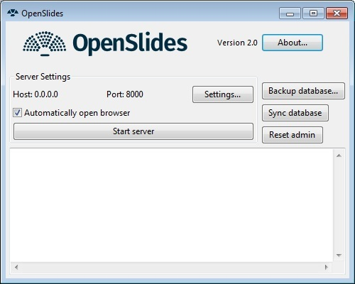
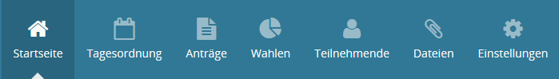

1 Erste Schritte
In diesem Kapitel werden die ersten Schritte bei OpenSlides erklärt.
1.1 Installation
OpenSlides muss nur auf einem Computer installiert werden. Dieser fungiert im Netzwerk als Server. Im Präsentationsmodus Single gibt es kein Netzwerk. OpenSlides muss dann auf dem einen verwendeten Computer installiert werden.
Die aktuelle Version von OpenSlides, für die dieses Handbuch gültig ist, ist Version 2.0.
1.1.1 Verwendung der Windows-Version (Portable Version mit openslides.exe)
Laden Sie die aktuelle OpenSlides Version für Windows von http://openslides.org herunter. Extrahieren Sie das zip-Archiv (z. B. openslides-N.N-portable.zip) in einen beliebigen Ordner. OpenSlides muss nun nicht weiter installiert werden. Alle notwendigen Programmelemente sind in dem Ordner enthalten.
1.1.2 Verwendung der Linux/MacOS-Version
Laden Sie die aktuelle OpenSlides Version für Linux/MacOS von
http://openslides.org oder über den Python Package Index (PyPI) ($ pip install openslides) herunter. Die Installationsanleitung für diese Version finden Sie in der beiliegenden README.rst. Folgen Sie den Anweisungen der Anleitung.
http://openslides.org oder über den Python Package Index (PyPI) ($ pip install openslides) herunter. Die Installationsanleitung für diese Version finden Sie in der beiliegenden README.rst. Folgen Sie den Anweisungen der Anleitung.
1.2 Konfiguration
Nach der Installation ist OpenSlides bereits vorkonfiguriert. Die beim ersten Start erzeugte (leere) Datenbank enthält einige Voreinstellungen. Die Konfiguration kann im laufenden Programm unter dem Tab „Konfiguration“ vorgenommen werden. Weitere Einstellungsmöglichkeiten für erfahrene Benutzer sind in der Datei settings.py möglich. Diese Datei liegt nicht im extrahierten OpenSlides Verzeichnis, sondern in einem Benutzerverzeichnis, das abhängig von Ihrem Betriebssystem ist. Unter Windows (außer bei der Portable Version) ist es standardmäßig
$HOME\AppData\Local\openslides
, unter Linux/MacOS ist es standardmäßig
~/.config/openslides
1.3 Start des Servers und Öffnen des Browsers
1.3.1 Verwendung der Windows-Version (Portable Version mit openslides.exe)
Wenn Sie die Windows-Version (Portable Version mit openslides.exe) verwenden, brauchen Sie nur die Datei openslides.exe auszuführen. Mit dieser wird der eine grafische Oberfläche gestartet, mit der Sie den OpenSlides-Server konfigurieren, starten und jederzeit beenden können:\begin_inset Separator latexpar\end_inset

Zum Starten klicken Sie einfach auf den Knopf Start server und ihr Webbrowser öffnet sich.
Falls Sie Ihren Administrator-Zugang vergessen haben, können Sie mit Klick auf Reset admin einen neuen Admin-Nutzer erstellen, dessen Name und Passwort. admin ist.
In Settings können Sie optional den Webhost und Port einstellen; mehr dazu siehe ??. Mit Backup database und Sync database können Sie Sitzungen speichern bzw. laden; mehr dazu siehe ??.
1.3.2 Verwendung der Linux/MacOS-Version
Starten Sie den Server, indem Sie in der Kommandozeile eingeben:
$ openslides
Wenn Sie eine virtuelle Arbeitsumgebung (virtualenv) verwenden, müssen Sie diese zuvor aktivieren:
$ source .venv/bin/activate
Damit wird der Server gestartet und ihr Browser mit der richtigen URL geöffnet.
OpenSlides kann jederzeit im Fenster der Kommandozeile mit der Tastenkombination Strg+C beendet werden. Alle eingegebenen Daten bleiben in der Datenbank gespeichert.
Weitere Startoptionen können Sie mit folgender Eingabe sehen:
$ openslides –help
1.3.3 Öffnen des Browsers
Bei Start des Servers wird automatisch der Browser mit der richtigen URL geöffnet.
Falls dies wegen Ihrer Browsereinstellungen nicht gelingt, rufen Sie das OpenSlides-Webinterface auf, indem Sie in die Adresszeile die IP-Adresse des Servers eintragen. Sie hat oft die Form http://192.168.x.y/, wobei x und y für eine bestimmte Zahl mit ein bis drei Ziffern stehen. Am Computer, auf dem OpenSlides gestartet wurde, kann OpenSlides auch über http://localhost:8000 aufgerufen werden.
1.3.4 Erster Login
Der erste Login als Administrator ist mit dem Benutzernamen admin und dem Passwort admin möglich. Sie sollten das Passwort nach dem ersten Start ändern, siehe ↓, um Unbefugten keinen Zugriff auf Ihre Daten zu gewähren.
Hinweis: OpenSlides benötigt Cookies um die Identität des Nutzers festzustellen, solange er eingeloggt ist. Beim Ausloggen wird das Cookie wieder gelöscht.
1.4 Arbeiten mit OpenSlides
Nach dem ersten Einloggen sieht OpenSlides so aus:\begin_inset Separator latexpar\end_inset

In der Kopfzeile kann man durch Klicken auf das Logo jederzeit auf die Startseite zurückkehren. In der Zeile rechts können Sie mit anderen Nutzern chatten, siehe ??, Ihr Profile bearbeiten und ihr Passwort ändern, siehe ↓ und die Menüsprache von OpenSlides ändern.
In der Menüleiste können Sie über die Menüpunkte alle Inhalte in OpenSlides eingeben und verwalten.\begin_inset Separator latexpar\end_inset

- Im Menüpunkt Startseite können Sie die Teilnehmer willkommen heißen und kurz erklären, wie man OpenSlides nutzt.
- Im Menüpunkt Tagesordnung können Sie die Tagesordnung der Veranstaltung im Vorfeld oder live anlegen, entsprechende Folien vorbereiten und die Rednerliste verwalten. Mehr zur Tagesordnung siehe ↓.
- Unter Anträge verwalten Sie die gestellten Anträge und die dazugehörigen Abstimmungen. Mehr dazu siehe ↓.
- Der Punkt Wahlen verwaltet die Wahlämter mit den Kandidaten sowie die jeweiligen Wahlergebnisse. Mehr zur dazu siehe ↓.
- Der Menüpunkt Teilnehmer/innen ermöglicht einen Zugriff auf die Personenprofile. Mehr zur dazu siehe ↓.
- Unter dem Punkt Dateien können Sie eigene Dateien auf den Server laden und zum Download anbieten. PDF-Dateien können auch auf dem Projektor angezeigt werden. Mehr zur dazu siehe ↓.
- Im Menüpunkt Einstellungen können die grundlegenden Einstellungen für die Veranstaltung vorgenommen werden. Mehr zur dazu siehe ↓.
Wenn Sie auf das Symbol
klicken, wird neben dem Begrüßungstext der aktuell projizierte Inhalt angezeigt (Live-Vorschau):\begin_inset Separator latexpar\end_inset

Damit haben Sie immer im Blick was die Teilnehmer gerade sehen und können während der Sitzung arbeiten. Das Projektorbild in voller Größe bekommen Sie in einem neuen Browsertab zu sehen, indem Sie auf die Live-Vorschau klicken. Sie ist auch unter der URL /projector/ zu finden. Loggen Sie sich an dem Computer, an dem der Projektor angeschlossen ist, in OpenSlides ein und rufen Sie den Link oder die URL auf. Legen Sie die Anzeige in einem eigenen Browserfenster auf den Projektor und projizieren Sie sie so auf die Leinwand. In vielen Browsern kann mit der Taste F11 in den Vollbildmodus gewechselt werden. Im Präsentationsmodus Single müssen Sie die Bildschirmanzeige auf Erweiterung/erweiterter Desktop stellen und das Browserfenster mit dem Projektorbild auf den Projektor schieben.
Das Projektorbild aktualisiert sich vollkommen automatisch. Sollte die Aktualisierung auf Grund eines Fehlers, zum Beispiel einer Unterbrechung der Verbindung zum Server, aussetzen, kann das Projektorbild an dem Computer, an dem der Projektor angeschlossen ist, regelmäßig mit der Taste F5 zurückgesetzt werden. Um dem Kopf des Projektorfensters nach einer Änderung in der Konfiguration zu aktualisieren, muss ebenfalls das Browserfenster zurückgesetzt werden.